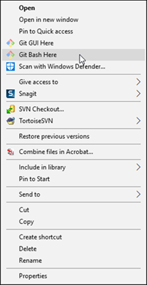

Install Manual Process
Manuals to Update for each SST GA Release
The regular release cadence is monthly releases of resolved issues, and quarterly releases of enhancements and new features. It has worked out to roughly 6 releases a year.
Syniti Solutions
The Full version contains Master Data Management, but not ISA. The following Installation Manuals in a Flare project are updated for each release if there are changes to be made.
-
Syniti Solutions Installation and Upgrade Manual
-
Syniti Solutions Software Requirements and Hardware Sizing Guide.
Manuals to Update for SAP PQ
SAP Accelerators by Syniti
The SAP Accelerators Manuals, also called the Solex version, contains ISA but not Master Data Management. SAP PQ process is scheduled twice yearly.
- SAP Accelerators by Syniti Implementation Quick Start Guide (rarely updated)
- SAP Accelerators by Syniti Installation and Upgrade Manual (always updated)
- SAP Accelerators by Syniti Operations Guide (rarely updated)
- SAP Accelerators by Syniti Configuration Guide (rarely updated)
- SAP Accelerators by Syniti Software Requirements and Hardware Sizing Guide (always updated)
SAP Advanced Data Migration by Syniti, cloud edition
NOTE: The most recent PQ did not require us to produce these manuals. We may have to do so n the future. Formerly the Cloud SKU, this item has passed the PQ Process and is on the price list as of November 2019. Cloud edition users will always be new installs, and on prem users will not update to cloud. We do not need to provide the security migration documents prepared for the 7.1 release for this product.
- SAP Advanced Data Migration by Syniti, cloud edition Configuration Guide
- SAP Advanced Data Migration by Syniti, cloud edition Implementation Quick Start Guide
- SAP Advanced Data Migration by Syniti, cloud edition Operations Guide
- SAP Advanced Data Migration by Syniti, cloud edition Security and Data Privacy
- SAP Advanced Data Migration by Syniti, cloud edition Software Requirements and Hardware Sizing Guide
Sources of Content
Changes to the Installation Manuals are tracked in Jira. Sources of changes include:
-
Jira tickets
-
Slack messages
-
Support emails
Organization of the Install Manuals Flare Project
The project is organized by manual. Several sections are used across multiple manuals, with conditional tags applied.
The Version History topic (Appendix A for the Installation Manual and the SRHS Guide) is updated for each manual with all updates made to the manual in the release. Appendix A is not delivered with the final system, it is used so that the documentation team can track changes for each version. The most recent entry is at the top.
Update the Installation Manuals
The following steps describe the collaboration, review, approval and final formatting process to get the Installation Manuals ready to publish for each software release.
Members of the Documentation Team take turns updating the Manuals for each release.
Follow these steps to update the install manuals:
-
NOTE: If you do not have a local copy of the install manuals on your laptop, see Clone the dsp-install-manual
-
-
NOTE: Ensure Track Changes is turned on for this version so that reviewers can find updates easily. The TW will include a link to this folder in the next step when they create the Jira ticket.
-
The TW creates a Jira ticket in the DSP70 project for updating the manuals for this release.
-
The TW links all tickets that describe updates to manuals to this ticket to track the updates.
-
The TW and contributors review and update the manuals in Sharepoint in the Published folder and Flare as needed. If major changes have been made to the Installation Manuals, Support will test these steps.
-
Once the collaboration is complete and the content is final, the approver sets the Documentation Status field to of the installation manual Jira issue to Approved.
-
The TW makes the changes in the Stangingnnn branch of the Flare project. Refer to Update Online Help for more information. After all changes are made, the TW builds the project in the dev environment in Jenkins.
-
The TW sets the Documentation Status field of the installation manual Jira issue to Peer Review and requests a peer review from another tech writer on the team in the doc_checkouts Slack channel.
-
After peer review is complete, if needed ,the Author updates the Falre project and builds the install manuals Flare project in dev/prod.
-
The TW sends notification that the final manuals are ready to Support with a link to the production version and then closes the Jira ticket.
Clone the dsp-install-manuals repo
To clone the dsp-install-manuals repo, follow the instructions here.
Synchronize your master branch with the BackOfficeAssoc GitHub Repo
NOTE: You MUST perform these steps each time you checkout a branch to ensure you are working in the latest copy of the master branch.
- In Windows-Explorer, right-click your dsp-install-manuals local folder and select Git Bash Here.

NOTE: If you do not have a local dsp-install-manuals repo, see Clone the dsp-install-manuals repo for instructions.
- Switch to the Stagingnnn branch where nnn is the latest release, by entering
git checkout Stagingnnn. - Enter the git command,
git pull origin Stagingnnn - Enter the command
git checkout -b <Stagingyyy where yyy is the new SST version name> - Open the project in Flare and update the DSPVersion variable to the current release version.
- Save and close Flare, and return to the git bash window.
- Enter the command
git add .. - Enter the command
git commit -m "<your commit message>". - Enter the command
git push origin <new branch name>.
Create a Release Folder on SharePoint
- Navigate to the Product Documentation > Published folder located here.
- Click +New and select Folder.
- Enter the release number into the Folder Name field.
- Click Create.
- Open the prior version folder and select the Word files of the different manuals.
- Click Copy to and select the new release folder you just created.
- Update the titles of the manuals to reflect the new release number.
- Open the new manuals and accept all changes made in the previous versions.
- Ensure Track Changes is on in the Word document to record updates.
NOTE: You could also create a new version of the Word document for any of the guides in Flare. Set the correct TOC for the print version (the one in the archive folder) and the Word targets will still work).
Create a JIRA Ticket for the Manuals
- In JIRA click the plus sign on the left side of the System Dashboard.
- Select the DSP70 project from the Project dropdown.
- Select Epic from the Issue Type dropdown.
- Enter an epic name in the Epic Name field. E.g. "Documentation for 7.0.1 Release (Manuals and Release Notes)".
- Enter a summary in the Summary field. E.g. “Update manuals with changes for 7.0.1.”
- Enter a description in the Description text box. E.g. “Word document links to the manuals with 7.0 updates. Link to Sharepoint folder.” NOTE: Make sure to include a link to the SharePoint folder that you created for this release.
- Add the Fix Version, as the release number.
- Add the Assignee, as yourself.
- Click Update.
Link Tickets Related to Manuals to JIRA Epic
Add links to the epic to any tickets that affect the installation manual.
Make Updates in Flare
After the manual content is reviewed and finalized make updates in Flare. Follow the instructions in the topics Work Flow In Process and Update Online Help.
Document all updates in the Version History - Install and the Version History - SRHS topics (located in the Content folder). While these topics are no longer included in the final manuals, we track our changes for internal purposes.
Update the Targets for the Manuals
| Manual | Target |
|---|---|
| Syniti SRHS Guide | HTML5 Full -Install |
| Syniti Installation and Upgrade Manual | HTML5 Full -Install |
| SAP Configuration Guide | HTML5 Solex -Install |
| SAP Installation and Upgrade Manual | HTML5 Solex -Install |
| SAP Operations Guide | HTML5 Solex -Install |
| SAP Quick Start Guide | HTML5 Solex -Install |
| SAP SRHS Guide | HTML5 Solex -Install |
To update the targets for the manuals:
- Update the Variable file in the Project Explorer and the Variables in each target. These updates include:
- ProductNameShort
- ProductNameFull
- SetupVersion
- CopyrightDate
- DSPVersion
-
Select the correct Condition Tags for the BOA and SAP manuals. The BOA manuals must exclude everything with the SAP tags, and the SAP manuals must exclude everything with the BOA tags.
-
Push the changes to the Stagingnnn branch and build the help in jenkins.
-
Post in the doc_checkouts channel that there is a need for a peer review.
Perform Peer Review of Installation Manuals
Follow the steps here.
Updating the SAP Operations Guide
This manual contains diagrams created in PowerPoint in the section Technical System Landscape. These diagrams are stored in the Published folder (Level_2_Slide_Box_ACMAndISA.pptx) along with the other files. When producing the final version of the Ops guide, pdf the slides and insert them into the pdf of the ops guide.